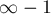

MAXimal
добавлено: 10 Jun 2008 19:37
редактировано: 24 Aug 2011 15:45
Содержание [скрыть]
Алгоритм Форда-Беллмана
Пусть дан ориентированный взвешенный граф с  вершинами и
вершинами и  рёбрами, и указана некоторая вершина . Требуется найти длины кратчайших путей от вершины до всех остальных вершин.
рёбрами, и указана некоторая вершина . Требуется найти длины кратчайших путей от вершины до всех остальных вершин.
В отличие от алгоритма Дейкстры, этот алгоритм применим также и к графам, содержащим рёбра отрицательного веса. Впрочем, если граф содержит отрицательный цикл, то, понятно, кратчайшего пути до некоторых вершин может не существовать (по причине того, что вес кратчайшего пути должен быть равен минус бесконечности); впрочем, этот алгоритм можно модифицировать, чтобы он сигнализировал о наличии цикла отрицательного веса, или даже выводил сам этот цикл.
Алгоритм носит имя двух американских учёных: Ричарда Беллмана (Richard Bellman) и Лестера Форда (Lester Ford). Форд фактически изобрёл этот алгоритм в 1956 г. при изучении другой математической задачи, подзадача которой свелась к поиску кратчайшего пути в графе, и Форд дал набросок решающего эту задачу алгоритма. Беллман в 1958 г. опубликовал статью, посвящённую конкретно задаче нахождения кратчайшего пути, и в этой статье он чётко сформулировал алгоритм в том виде, в котором он известен нам сейчас.
Описание алгоритма
Мы считаем, что граф не содержит цикла отрицательного веса. Случай наличия отрицательного цикла будет рассмотрен ниже в отдельном разделе.
Заведём массив расстояний , который после отработки алгоритма будет содержать ответ на задачу. В начале работы мы заполняем его следующим образом: , а все остальные элементы ![d[]](../tex2png/cache/192f42354669dea1048458208212e4d4.png) равны бесконечности
равны бесконечности  .
.
Сам алгоритм Форда-Беллмана представляет из себя несколько фаз. На каждой фазе просматриваются все рёбра графа, и алгоритм пытается произвести релаксацию (relax, ослабление) вдоль каждого ребра  стоимости
стоимости  . Релаксация вдоль ребра — это попытка улучшить значение значением . Фактически это значит, что мы пытаемся улучшить ответ для вершины
. Релаксация вдоль ребра — это попытка улучшить значение значением . Фактически это значит, что мы пытаемся улучшить ответ для вершины  , пользуясь ребром и текущим ответом для вершины
, пользуясь ребром и текущим ответом для вершины  .
.
Утверждается, что достаточно  фазы алгоритма, чтобы корректно посчитать длины всех кратчайших путей в графе (повторимся, мы считаем, что циклы отрицательного веса отсутствуют). Для недостижимых вершин расстояние останется равным бесконечности .
фазы алгоритма, чтобы корректно посчитать длины всех кратчайших путей в графе (повторимся, мы считаем, что циклы отрицательного веса отсутствуют). Для недостижимых вершин расстояние останется равным бесконечности .
Реализация
Для алгоритма Форда-Беллмана, в отличие от многих других графовых алгоритмов, более удобно представлять граф в виде одного списка всех рёбер (а не списков рёбер — рёбер из каждой вершины). В приведённой реализации заводится структура данных  для ребра. Входными данными для алгоритма являются числа
для ребра. Входными данными для алгоритма являются числа  , список
, список  рёбер, и номер стартовой вершины . Все номера вершин нумеруются с
рёбер, и номер стартовой вершины . Все номера вершин нумеруются с  по .
по .
Простейшая реализация
Константа  обозначает число "бесконечность" — её надо подобрать таким образом, чтобы она заведомо превосходила все возможные длины путей.
обозначает число "бесконечность" — её надо подобрать таким образом, чтобы она заведомо превосходила все возможные длины путей.
struct edge { int a, b, cost; }; int n, m, v; vector<edge> e; const int INF = 1000000000; void solve() { vector<int> d (n, INF); d[v] = 0; for (int i=0; i<n-1; ++i) for (int j=0; j<m; ++j) if (d[e[j].a] < INF) d[e[j].b] = min (d[e[j].b], d[e[j].a] + e[j].cost); // вывод d, например, на экран }
Проверка "if (d[e[j].a] < INF)" нужна, только если граф содержит рёбра отрицательного веса: без такой проверки бы происходили релаксации из вершин, до которых пути ещё не нашли, и появлялись бы некорректные расстояния вида , , и т.д.
Улучшенная реализация
Этот алгоритм можно несколько ускорить: зачастую ответ находится уже за несколько фаз, а оставшиеся фазы никакой полезной работы не происходит, лишь впустую просматриваются все рёбра. Поэтому будем хранить флаг того, изменилось что-то на текущей фазе или нет, и если на какой-то фазе ничего не произошло, то алгоритм можно останавливать. (Эта оптимизация не улучшает асимптотику, т.е. на некоторых графах по-прежнему будут нужны все фаза, но значительно ускоряет поведение алгоритма "в среднем", т.е. на случайных графах.)
С такой оптимизацией становится вообще ненужным ограничивать вручную число фаз алгоритма числом — он сам остановится через нужное число фаз.
void solve() { vector<int> d (n, INF); d[v] = 0; for (;;) { bool any = false; for (int j=0; j<m; ++j) if (d[e[j].a] < INF) if (d[e[j].b] > d[e[j].a] + e[j].cost) { d[e[j].b] = d[e[j].a] + e[j].cost; any = true; } if (!any) break; } // вывод d, например, на экран }
Восстановление путей
Рассмотрим теперь, как можно модифицировать алгоритм Форда-Беллмана так, чтобы он не только находил длины кратчайших путей, но и позволял восстанавливать сами кратчайшие пути.
Для этого заведём ещё один массив , в котором для каждой вершины будем хранить её "предка", т.е. предпоследнюю вершину в кратчайшем пути, ведущем в неё. В самом деле, кратчайший путь до какой-то вершины является кратчайшим путём до какой-то вершины , к которому приписали в конец вершину .
Заметим, что алгоритм Форда-Беллмана работает по такой же логике: он, предполагая, что кратчайшее расстояние до одной вершины уже посчитано, пытается улучшить кратчайшее расстояние до другой вершины. Следовательно, в момент улучшения нам надо просто запоминать в ![p[]](../tex2png/cache/f41743bb1304c4dfaee1474862f9de80.png) , из какой вершины это улучшение произошло.
, из какой вершины это улучшение произошло.
Приведём реализацию Форда-Беллмана с восстановлением пути до какой-то заданной вершины  :
:
void solve() { vector<int> d (n, INF); d[v] = 0; vector<int> p (n, -1); for (;;) { bool any = false; for (int j=0; j<m; ++j) if (d[e[j].a] < INF) if (d[e[j].b] > d[e[j].a] + e[j].cost) { d[e[j].b] = d[e[j].a] + e[j].cost; p[e[j].b] = e[j].a; any = true; } if (!any) break; } if (d[t] == INF) cout << "No path from " << v << " to " << t << "."; else { vector<int> path; for (int cur=t; cur!=-1; cur=p[cur]) path.push_back (cur); reverse (path.begin(), path.end()); cout << "Path from " << v << " to " << t << ": "; for (size_t i=0; i<path.size(); ++i) cout << path[i] << ' '; } }
Здесь мы сначала проходимся по предкам, начиная с вершины , и сохраняем весь пройденный путь в списке . В этом списке получается кратчайший путь от до , но в обратном порядке, поэтому мы вызываем от него и затем выводим.
Доказательство алгоритма
Во-первых, сразу заметим, что для недостижимых из вершин алгоритм отработает корректно: для них метка так и останется равной бесконечности (т.к. алгоритм Форда-Беллмана найдёт какие-то пути до всех достижимых из  вершин, а релаксация во всех остальных вершинах не произойдёт ни разу).
вершин, а релаксация во всех остальных вершинах не произойдёт ни разу).
Докажем теперь следующее утверждение: после выполнения  фаз алгоритм Форда-Беллмана корректно находит все кратчайшие пути, длина которых (по числу рёбер) не превосходит .
фаз алгоритм Форда-Беллмана корректно находит все кратчайшие пути, длина которых (по числу рёбер) не превосходит .
Иными словами, для любой вершины обозначим через  число рёбер в кратчайшем пути до неё (если таких путей несколько, можно взять любой). Тогда это утверждение говорит о том, что после фаз этот кратчайший путь будет найден гарантированно.
число рёбер в кратчайшем пути до неё (если таких путей несколько, можно взять любой). Тогда это утверждение говорит о том, что после фаз этот кратчайший путь будет найден гарантированно.
Доказательство. Рассмотрим произвольную вершину , до которой существует путь из стартовой вершины , и рассмотрим кратчайший путь до неё: . Перед первой фазой кратчайший путь до вершины  найден корректно. Во время первой фазы ребро было просмотрено алгоритмом Форда-Беллмана, следовательно, расстояние до вершины
найден корректно. Во время первой фазы ребро было просмотрено алгоритмом Форда-Беллмана, следовательно, расстояние до вершины  было корректно посчитано после первой фазы. Повторяя эти утверждения раз, получаем, что после -й фазы расстояние до вершины посчитано корректно, что и требовалось доказать.
было корректно посчитано после первой фазы. Повторяя эти утверждения раз, получаем, что после -й фазы расстояние до вершины посчитано корректно, что и требовалось доказать.
Последнее, что надо заметить — это то, что любой кратчайший путь не может иметь более ребра. Следовательно, алгоритму достаточно произвести только фазу. После этого ни одна релаксация гарантированно не может завершиться улучшением расстояния до какой-то вершины.
Случай отрицательного цикла
Выше мы везде считали, что отрицательного цикла в графе нет (уточним, нас интересует отрицательный цикл, достижимый из стартовой вершины , а недостижимые циклы ничего в вышеописанном алгоритме не меняют). При его наличии возникают дополнительные сложности, связанные с тем, что расстояния до всех вершин на этом цикле, а также расстояния до достижимых из этого цикла вершин не определены — они должны быть равны минус бесконечности.
Нетрудно понять, что алгоритм Форда-Беллмана сможет бесконечно делать релаксации среди всех вершин этого цикла и вершин, достижимых из него. Следовательно, если не ограничивать число фаз числом , то алгоритм будет работать бесконечно, постоянно улучшая расстояния до этих вершин.
Отсюда мы получаем критерий наличия достижимого цикла отрицательного веса: если после фазы мы выполним ещё одну фазу, и на ней произойдёт хотя бы одна релаксация, то граф содержит цикл отрицательного веса, достижимый из ; в противном случае, такого цикла нет.
Более того, если такой цикл обнаружился, то алгоритм Форда-Беллмана можно модифицировать таким образом, чтобы он выводил сам этот цикл в виде последовательности вершин, входящих в него. Для этого достаточно запомнить номер вершины  , в которой произошла релаксация на -ой фазе. Эта вершина будет либо лежать на цикле отрицательного веса, либо она достижима из него. Чтобы получить вершину, которая гарантированно лежит на цикле, достаточно, например, раз пройти по предкам, начиная от вершины . Получив номер
, в которой произошла релаксация на -ой фазе. Эта вершина будет либо лежать на цикле отрицательного веса, либо она достижима из него. Чтобы получить вершину, которая гарантированно лежит на цикле, достаточно, например, раз пройти по предкам, начиная от вершины . Получив номер  вершины, лежащей на цикле, надо пройтись от этой вершины по предкам, пока мы не вернёмся в эту же вершину (а это обязательно произойдёт, потому что релаксации в цикле отрицательного веса происходят по кругу).
вершины, лежащей на цикле, надо пройтись от этой вершины по предкам, пока мы не вернёмся в эту же вершину (а это обязательно произойдёт, потому что релаксации в цикле отрицательного веса происходят по кругу).
Реализация:
void solve() { vector<int> d (n, INF); d[v] = 0; vector<int> p (n, -1); int x; for (int i=0; i<n; ++i) { x = -1; for (int j=0; j<m; ++j) if (d[e[j].a] < INF) if (d[e[j].b] > d[e[j].a] + e[j].cost) { d[e[j].b] = max (-INF, d[e[j].a] + e[j].cost); p[e[j].b] = e[j].a; x = e[j].b; } } if (x == -1) cout << "No negative cycle from " << v; else { int y = x; for (int i=0; i<n; ++i) y = p[y]; vector<int> path; for (int cur=y; ; cur=p[cur]) { path.push_back (cur); if (cur == y && path.size() > 1) break; } reverse (path.begin(), path.end()); cout << "Negative cycle: "; for (size_t i=0; i<path.size(); ++i) cout << path[i] << ' '; } }
Поскольку при наличии отрицательного цикла за итераций алгоритма расстояния могли уйти далеко в минус (по всей видимости, до отрицательных чисел порядка ), в коде приняты дополнительные меры против такого целочисленного переполнения:
d[e[j].b] = max (-INF, d[e[j].a] + e[j].cost);
В приведённой выше реализации ищется отрицательный цикл, достижимый из некоторой стартовой вершины ; однако алгоритм можно модифицировать, чтобы он искал просто любой отрицательный цикл в графе. Для этого надо положить все расстояния ![d[i]](../tex2png/cache/a1fc654329221233840e1ce43c252646.png) равными нулю, а не бесконечности — так, как будто бы мы ищем кратчайший путь изо всех вершин одновременно; на корректность обнаружения отрицательного цикла это не повлияет.
равными нулю, а не бесконечности — так, как будто бы мы ищем кратчайший путь изо всех вершин одновременно; на корректность обнаружения отрицательного цикла это не повлияет.
Дополнительно на тему этой задачи — см. отдельную статью "Поиск отрицательного цикла в графе".
Задачи в online judges
Список задач, которые можно решить с помощью алгоритма Форда-Беллмана:
- E-OLIMP #1453 "Форд-Беллман" [сложность: низкая]
- UVA #423 "MPI Maelstrom" [сложность: низкая]
- UVA #534 "Frogger" [сложность: средняя]
- UVA #10099 "The Tourist Guide" [сложность: средняя]
- UVA #515 "King" [сложность: средняя]
См. также список задач в статье "Поиск отрицательного цикла".